13 лучших книг по Python для начинающих и продолжающих
Представляем вам подборку лучших книг по Python для начинающих программистов, опытных питонистов и детей, с реальными рецензиями.
Python – очень эффективный и дружелюбный язык программирования. В этой статье вы найдете 13 лучших книг по Python для программистов разного уровня. Есть даже две книги для детей!
Не имеет значения , какую книгу ты прочтешь первой. Всегда важнее вторая.
Если, читая одну из книг нашей подборки, вы застряли, не сдавайтесь. Возьмите другую, поищите в интернете, спросите на форуме или просто сделайте перерыв.
7 лучших книг по Python для начинающих
Эти книги предназначены для новичков в программировании, для которых Python стал первым языком. Они начинаются с основ, общих понятий и не требуют никаких начальных знаний.
Python Crash Course, Eric Matthes
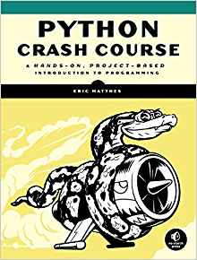
Книга начинается с пошагового руководства по основным элементам Python и структурам данных. Подробно разобраны все темы: от переменных до тестирования кода.
Во второй половине книги читатель будет работать над тремя крупными проектами, создавая полезные и забавные приложения.
Первый проект – игра об инопланетном вторжении, разработанная с использованием пакета pygame. Вы спроектируете корабль, создадите инопланетный флот и научитесь сражаться с космическими захватчиками.
Во втором проекте вы научитесь работать с matplotlilb: загружать данные в различных форматах, визуализировать результаты в виде графиков и диаграмм, взаимодействовать с веб-API и извлекать информацию с GitHub и HackerNews.
Третий проект – создание полноценного веб-приложения на Django с админ-панелью и контролем доступа пользователей.
Head-First Python, Paul Barry
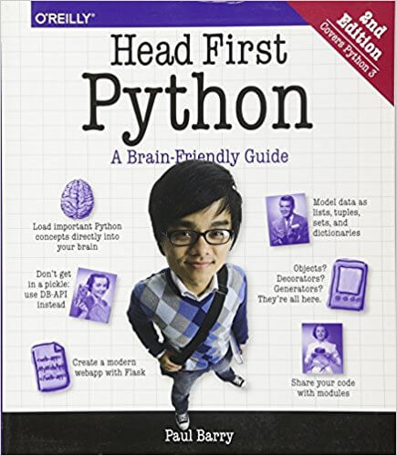
Уникальный подход серии Head First – небольшие самодостаточные разделы, богатые понятными иллюстрациями, примерами и дополнительными фактами – делает эту книгу необычайно приятной и легкой для чтения.
Изучая книгу, вы будете по кусочкам создавать динамический веб-сайт на Python и CGI, а затем и Android-приложение. Вы научитесь обрабатывать пользовательский ввод, разворачивать и масштабировать ваш проект.
Хотя эта книга не столь всеобъемлюща, как некоторые другие, она охватывает широкий спектр задач и объясняет их доступным языком. Если вы только начинаете погружаться в мир программирования и еще не привыкли к сухому языку большинства руководств, серия Head First – для вас. Читая ее, вы точно не заскучаете.
Invent Your Own Computer Games with Python, Al Sweigart
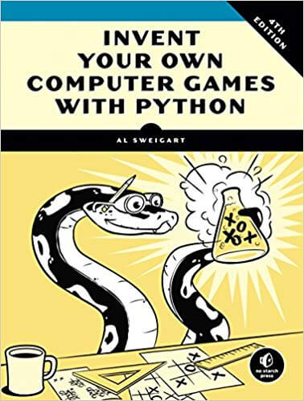
Если вы любите игры и мечтаете их создавать, то вам непременно следует обратить внимание на эту книгу. Она расскажет об основах программирования на Python и поможет создать несколько классических игр: Угадайку, Dragon's Realm, Виселицу, Реверси, Сонар и, конечно, Крестики-Нолики.
В процессе вы на практике научитесь работать с различными типами данных и их преобразованиями, списками, потоком программы, областями видимости, функциями и условными операторами, познакомитесь с криптографией и даже искусственным интеллектом.
Из книги вы узнаете, как анимировать графику, обнаруживать столкновения, использовать звуки, изображения и спрайты. В этом поможет замечательная библиотека PyGame.
Think Python: How to Think Like a Computer Scientist, Allen B. Downey
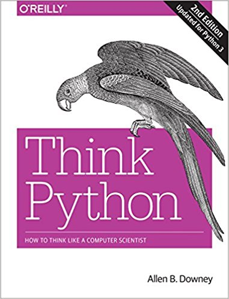
Если создание компьютерных игр – слишком легкомысленное занятие для вас, возьмите эту книгу. Ее подход гораздо серьезнее, ведь автор ставит себе задачу научить вас думать как программист.
Книга написана более сухо, чем предыдущие, и имеет классическую линейную структуру. Основы программирования на Python изложены простым и понятным языком. Некоторые продвинутые области освещены довольно поверхностно (книга все-таки для новичков), зато есть много тем, которые в других руководствах не рассматриваются, например, анализ алгоритмов, изменяемость и полиморфизм.
В последнем издании (2015) появилось больше практических упражнений, но в целом она ориентирована на глубокое понимание теории.
Effective Computation in Physics: Field Guide to Research with Python, Anthony Scopatz, Kathryn D. Huff
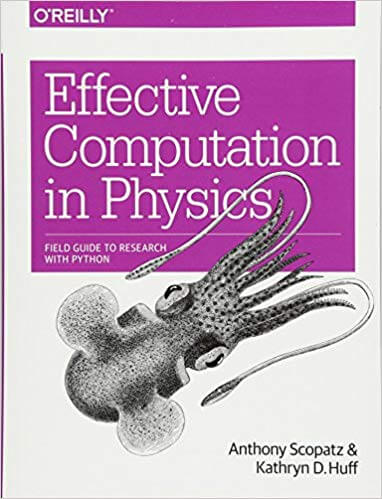
Название звучит довольно пугающе, но тем не менее это одна из лучших книг по Python для людей, не имеющих опыта работы с физикой и вычислительными исследованиями.
Книга разделена на четыре блока:
Learn Python 3 the Hard Way, Zed A. Shaw
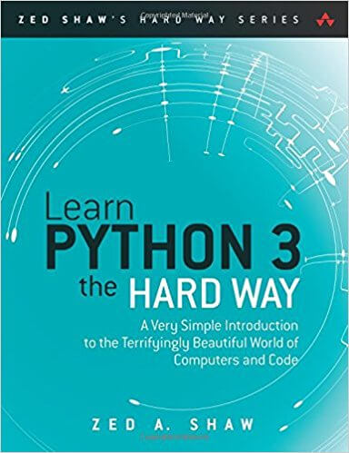
Не позволяйте названию отпугнуть вас. В долгосрочной перспективе "трудный путь" окажется легким, ведь он с самого начала покажет вам, как обстоят дела в программировании на самом деле.
Вводите весь код самостоятельно, делайте все упражнения, ищите свое решение для каждой проблемы – это единственно верный путь к успеху. Изучив это руководство, вы уже не будете новичком.
Содержание книги представлено замечательно: четкие главы, краткие и понятные примеры кода, более 50 упражнений, каждое из которых основано на предыдущем.
Среди всех книг этой подборки, "Трудный путь" имеет самые смешанные отзывы. Сообщество Stack Overflow отмечает, что ее читатели иногда задают бессмысленные вопросы на форуме, что связано с особенностями подачи материала. И все же она входит в список лучших книг по Python.
Real Python Course, Real Python Team
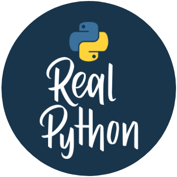
Книга состоит из объяснений, примеров кода и упражнений, позволяющих немедленно применить и закрепить полученные знания.
Руководство ориентировано на практический подход. Оно глубоко и понятно описывает основы языка, но также рассматривает более сложные и продвинутые функции Python. Вы научитесь обрабатывать PDF-файлы, использовать SQL, парсить веб-страницы, проводить сложные вычисления с помощью numpy и matplotlib, создавать графические интерфейсы.
Подборка лучших книг по Python для детей
Следующие две книги предназначены для детей в возрасте 9-10 лет (или старше). Разумеется, их нельзя просто дать ребенку и отправить его учиться, но они идеально подходят для совместных занятий с родителями.
Python for Kids: A Playful Introduction to Programming, Jason R. Briggs
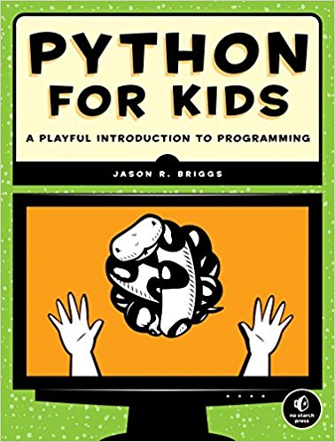
Эта забавная книга подходит для новичков всех возрастов. Это четкое, простое, обильно иллюстрированное введение в программирование на Python с замечательными примерами.
После установки и разбора основных понятий, вы начнете работать с графикой в библиотеке Python turtle – популярной платформе для обучения детей программированию.
После теоретической части начинаются два забавных проекта. Первый из них – Bounce – однопользовательская версия Pong. Он интегрирует полученные знания о функциях, классах, потоке выполнения, создании интерфейсов с помощью tkinter, выполнении геометрических вычислений и использовании привязок событий для создания интерактивности.
Второй проект немного сложнее и глубже – видеоигра Mr. Stickman Races for the Exit.
Вам понравится эта книга, если вы ищете веселое, доступное введение в программирование и Python в частности.
Teach Your Kids to Code: A Parent-Friendly Guide to Python Programming, Bryson Payne
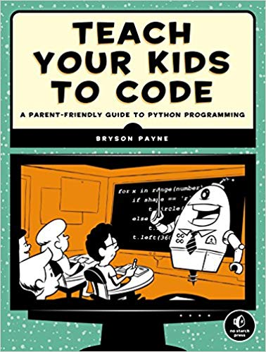
Эта книга похожа на предыдущую, но предназначена больше для взрослых, которые сами учатся программировать вместе с ребенком.
От большинства вводных руководств она отличается использованием цвета и большим количеством иллюстраций. Объяснения здесь не такие глубокие, но вполне понятные и достаточные для начала работы.
Начинается все с основ языка и "черепахи" (turtle). Каждое изученное понятие сразу же применяется в созданной графике и она становится все более сложной. Вы создадите несколько забавных игр и простой графический редактор. В книге очень много задач и великолепные резюме в конце каждой главы. К концу чтения у вас будут все необходимые инструменты Python для создания полноценных игр.
Подборка лучших книг по Python для среднего и продвинутого уровня
Python имеет низкий порог вхождения, поэтому у новичков часто появляется ошибочное представление, что возможности этого языка невелики или что использовать лучшие практики и хороший стиль кода необязательно.
Настоящее понимание языка требует практики. Узнав, что происходит "под капотом" вы научитесь программировать намного эффективнее.
Книги из этого раздела дадут вам более глубокое понимание концепций Python и научить кодить красиво.
Обратите внимание, эти книги не для новичков. Они не рассказывают о переменных и циклах, а сразу переходят к сложным понятиям, поэтому будут полезны для продолжающих питонистов.
Python Tricks: A Buffet of Awesome Python Features, Dan Bader
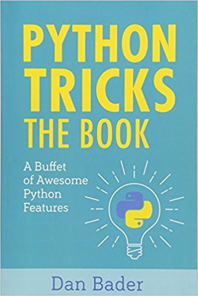
В этой книге вы найдете множество малоизвестных функций и рекомендаций для более глубокого понимания Python. Каждый из 43 разделов – это независимое описание отдельной концепции – трюка – с обсуждением, примерами кода и выводами.
Содержание книги – это шведский стол, на котором вы можете попробовать любое понравившееся вам блюдо.
Вместе с книгой идут 12 замечательных бонусных видео, примерно по 11 минут каждое.
Fluent Python: Clear, Concise, and Effective Programming, Luciano Ramalho
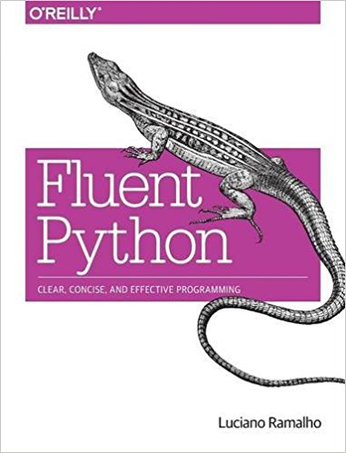
Эта книга была создана для опытных программистов на Python 2, которые хотят перейти на Python 3. Она идеально подходит для опытных питонистов, которые хотят перейти на следующий уровень.
Это также великолепный справочник для опытных программистов на других языках, которые хотят посмотреть, как реализуется на Python та или иная концепция.
В книге шесть разделов, каждый из которых можно читать независимо от других:
Если вам нужен более глубокий ответ, чем можно найти на Stack Overflow, обратитесь к этой книге.
Effective Python: 59 Ways to Write Better Python, Brett Slatkin
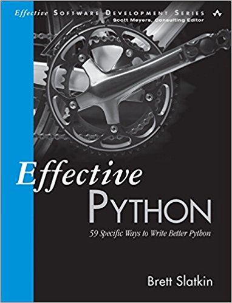
Это сборник из 59 независимых друг от друга статей разной сложности, посвященных лучшим практикам программирования, малоизвестным функциям и встроенным инструментам языка.
Вы можете читать главы подряд или выбирать только те, которые вам интересны. Каждая статья занимает 2-4 страницы, поэтому ее вполне можно разобрать за один подход.
Всего в книге 8 разделов:
Python Cookbook, David Beazley & Brian K. Jones
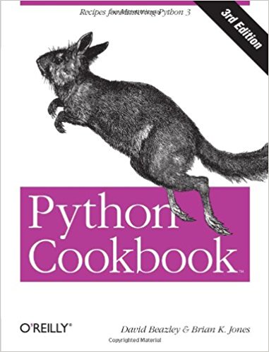
Среди всех лучших книг по Python из этой подборки эта имеет максимальный уровень детализации. Каждый рецепт в "поваренной книге" имеет расширенный пример кода, а также обсуждение некоторых конкретных элементов решения.
Прежде всего автор четко ставит задачу, например: "вы хотите написать декоратор, который добавляет дополнительный аргумент к вызывающей сигнатуре оборачиваемой функции”. Затем следует современный код решения на Python 3 и несколько страниц, посвященных его разбору.
Авторы "поваренной книги" часто выступают с докладами на крупнейших Python-конференциях и активно участвуют в развитии языка.
Пишите код!
Несмотря на низкий порог вхождения, изучение Python – это бесконечный процесс. Язык настолько популярен и так быстро развивается, что в нем всегда найдется что-то новенькое. Однако любые новшества должны базироваться на прочной основе, которую вам поможет создать наша подборка лучших книг по Python.
Перевод статьи The Best Python Books